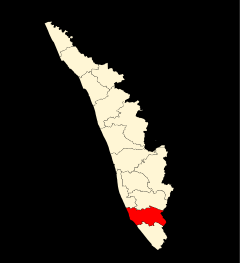

Achencoil
Achancoil is situated about 80 kms from Punalur town and it is an important pilgrim center. The Sastha temple here, situated amidst dense forest. The idol of Sastha is supposed to have been installed several centuries before the Christian Era.

Alumkadavu
Alumkadavu located at 26 Kms from Kollam City and on the lakeside of Kollam-Alappuzha National Water Way. The “Green Channel Back Water Resort” at Alumkadavu makes itself a tranquil location for both foreign and Indian Tourists.
Kollam is a city in the state of Kerala, on India's Malabar Coast. It’s known as a trade hub and for its beaches,
like lively Kollam and secluded Thirumullavaram. Sardar Vallabhbhai Patel Police Museum has artifacts tracing the
history of the police force. Nearby, Ashtamudi Lake is a gateway to the Kerala backwaters, a network of waterways
rich with vegetation. The striped 1902 Tangasseri Lighthouse has ocean views. The city is on the banks of Ashtamudi
Lake. Kollam has a strong commercial reputation since the days of the Phoenicians and Romans. Fed by the Chinese
trade, it was mentioned by Ibn Battuta in the 14th century as one of the five Indian ports he had seen during the
course of his twenty-four-year travels. Desinganadu's rajas exchanged embassies with Chinese rulers while there was
a flourishing Chinese settlement at Kollam.